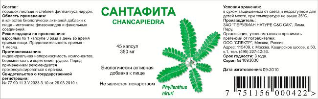

Один из вопросов, который интересует любого человека – это его здоровье.
Что же такое здоровье? «Здоровье (по определению ВОЗ) – это не отсутствие болезни как таковой или физических недостатков, а состояние полного физического, душевного и социального благополучия».
Согласно различным данным, здоровье людей на 45-50% определяется образом жизни (питание, условия труда, материально-бытовые и социальные факторы), на 17-20% - внешней средой обитания, природно-климатическими условиями, на 18-20% - генетическими факторами и только на 8-10% - здравоохранением.
Изменение условий жизни (урбанизация, частые поездки в транспорте, большая занятость в среде производства, малочисленные семьи и др.), демографической ситуации в обществе (рост удельного веса лиц пожилого и старческого возраста) значительно ухудшает состояние здоровья населения.
Большое влияние на показатели здоровья оказывает и резкое изменение привычного характера питания на протяжении жизни: дефицит необходимых минералов, витаминов, растительной клетчатки, полиненасыщенный жирных кислот, стремительно возросшее потребление животных жиров, углеводов, термически обработанной пищи, «фастфудов».
Внешняя среда жизни человека в России тоже далека от идеальной: с воздухом, водой, пищей, синтетическими лекарствами, табачным дымом в организм поступают чужеродные вещества (ксенобиотики), соли тяжелых металлов (свинец, ртуть, кадмий и т.п.), радионуклидов. Накапливаясь в соединительной ткани организма, они вызывают хронические заболевания, интоксикации, раковые перерождения.
Распространившиеся в короткие сроки различные источники электромагнитного излучения (телевизор, компьютеры, мобильные телефоны), вибрации приводят к нарушению электромагнитных процессов в организме человека. Эту угрозу мы только начинаем осознавать.
Из-за загазованности воздуха в атмосфере уже снижено содержание кислорода на 20% и, на фоне постоянных стрессов и снижения физической активности у большинства людей, это ведет к хроническому недостатку кислорода в организме, уменьшению выработки энергии, что облегчает формирование патологических изменений в организме, приводит к быстрому изнашиванию органов и систем, преждевременному старению, сокращению продолжительности жизни.
В последние годы ученые разных стран уже прямо говорят о происходящем глобальном кризисе экологии организма и угрозе существования человечества. Таким образом, здоровье, качество и продолжительность жизни зависят и от условий, которые созданы для нормального функционирования клеток организма, их питания и очистки.
Все больший урон человечеству наносят старые и новые вирусные болезни. Резко возросла частота хронических воспалительных и дегенеративных процессов, перед которыми современная медицина бессильна.
Злоупотребление антибиотиками, транквилизаторами, гормональными препаратами уже больше угрожают человечеству, чем спасают его в действительно критических ситуациях со здоровьем. Почти 80% всех лекарств - дорогостоящие иностранные препараты. Из них большой процент составляют подделки известных брендов. Подавляющее большинство фармацевтических препаратов обладает рядом серьёзных побочных действий, осложняющих лечебный процесс и вызывающих ещё большее ухудшение состояния человека. Ни одна лаборатория не может подсказать, как поведут себя в организме 4 и более принимаемых одновременно «лекарств». А их нередко назначают 15 -20 и более.
Традиционный взгляд медицины на человека с позиции материального тела, без учёта его духовной составляющей, не приводит к полному выздоровлению, а лишь уменьшает симптомы болезни.
На сегодняшний день человечеству даны уникальные Знания, в которых раскрывается строение человека и его роль Мироздании, объясняется, что человек, помимо физического тела, имеет энергетические поля разной плотности, а вершиной управления энергетической сущности является «Со-Знание Души».
Эти знания, передаваемые Творцом с 2004 года через Леонида Ивановича Маслова и записанные в книгах «Откровения людям нового века», и легли в основу концепции научно-исследовательского института Здоровьесберегающих технологий, согласно которой предложено рассматривать человека как открытую энерго-информационную систему (микрокосмос), соединённую с Высшим Космическим Разумом.
Становится очевидным, что здоровье человека напрямую зависит от уровня развития его Со-Знания, Души, Духа и гармонии с окружающим пространством.
Представители современной медицины, принимающие эти Знания, видят выход в интеграции традиционных и нетрадиционных методов лечения и оздоровления человека, принятых в классической медицине с работой по восстановлению энергетического баланса организма, его Душой и Со-Знанием. Это позволит осуществить постепенный переход с элементальной на тонкополевую, информационную медицину. В рамках работы НИИ Здоровьесберегающих технологий уже ведется работа по диагностике функциональных нарушений – дисгармонии – на уровне отдельной клетки человеческого организма, что открывает уникальные возможности по профилактике и лечению заболеваний.
Одним из вариантов восстановления гармонии всех уровней организма являются растения, подаренные нам Природой. Еще Гиппократ учил своих учеников: «Врач лечит, Природа излечивает».
Уровень современных технологий позволяет использовать уникальные ресурсы растительных препаратов уже с позиций многомерной медицины.
В качестве одной из возможностей помощи организму можно рассматривать серию препаратов, созданных на основе растений, произрастающих в экологически чистом месте Планеты – Перу: кайхол, кастим, катачи, макада, сантафита.
КАЙХОЛ
Относится к семейству Cucurbitaceae. Это вьющееся годовое растение, широко распространеное в Перу, стебель которого может достигать 5м в высоту. Плоды представляют собой продолговатые уплотненные стручки, обычно загнутые у основания, длиной 10-20 см.
(регистрационный № 77.99.11.3.У.3156.5.10 от 11.05.2010 г), бессрочное регистрационное удостоверение действительно на территории государств таможенного союза.
Растение является профилактическим и терапевтическим средством, способствующим снижению общего холестерина за счет регуляции метаболизма жиров. Благодаря липотропическому действию связывает липиды и стабилизирует содержание холестерина в крови как за счет нормализации синтеза ЛПВП (хорошего холестерина), так и снижению в крови ЛПНП (плохого холестерина), который накапливается на стенках сосудов и может приводить к формированию атеросклеротической бляшки, уменьшающей просвет сосуда, затрудняющей прохождение крови и нарушающей питание органов и тканей.
Экстракт растения испытывался в клинических исследованиях, проводимых Институтом Высокогорных Исследований Перуанского Университета Кайэтано Эредия.
Основные биоактивные составляющие:
Сапонины, тритерпеноиды, пептин, кислота галактуроновая, дигидрокситриптамин, минералы (фосфор, кальций), витамины (тиамин, ниацин, витамин С), липопротеины и стероиды (систостенол и 3-бета-гликозид) с гипогликемическим и антилипемическим действием, кукурбитацин, липопротеины низкой плотности.
Показания к применению:
- ожирение;
- сахарный диабет 2 типа;
- гипертоническая болезнь, ИБС;
- период постменопаузы у женщин – для профилактики сердечнососудистых заболеваний;
- профилактика постинфарктных и постинсультных осложнений.
Способ применения:
По 2 капсуле 3 раза в день за 30 мин. до еды, продолжительность приёма - 2 месяца. Запивать 1/2 стакана теплой кипяченой воды.
Кайхол является базовым препаратом в любой схеме профилактики и лечения, т.к. основное действие — улучшение микроциркуляции во всех органах и тканях нашего организма, насыщение клеток кислородом и питательными веществами, удаление продуктов распада, токсинов, восстановление белкового, жирового, углеводного обмена.
Противопоказания:
- индивидуальная непереносимость компонентов;
- беременность и кормление грудью.
Перед применением проконсультироваться с врачом.
КАСТИМ
Многолетняя лиана семейства мареновых Uncaria Tomentosa стала известна ученым более 40 лет назад. Лечебные свойства этого растения изучают в медицинских центрах Перу, США, Австрии, Китая и др.
(регистрационный № 77.99.11.3.У.1278.3.10 от 05.03.2010 г.), бессрочное регистрационное удостоверение действительно на территории государств таможенного союза.
В России клинические исследования свойств препарата из этой лианы были проведены в Российском онкологическом научном центре РАМН, НИИ фармакологии РАМН, НИИ хирургии им. А.В. Вишневского. Данные исследования позволили хорошо изучить состав активного вещества и подтвердили высокую терапевтическую эффективность препарата из этого растения при многих заболеваниях.
Основные биоактивные составляющие:
| Основные соединения, входящие в состав препарата | |
| Соединения | Действие |
| Алкалоиды: изоптероподин, ринхофиллин, птероподин, митрафиллин, изомитрафиллин, изоринхофиллин | Стимулирует фагоцитоз, активирует клеточное и гуморальное звенья иммунитета, улучшает реологию крови, содействует усилению фагоцитоза оптимизирует выработку противовоспалительных цитокинов |
| Полифенолы, тритерпены, растительные стеролы | Противовоспалительные, противоопухолевые свойства |
| Гликозиды; Глицирризин, глициризиновая кислота | Блокируют размножение вирусов в клетке |
| Флаваноид: Протоантоцианид | Антиоксидантная активность |
Показания к применению:
- ревматоидные артриты, артрозы;
- доброкачественные образования (миомы, мастопатии);
- заболевания желудочно-кишечного трактах (хронический гастрит, язвенная болезнь желудка и 12п.к., хронический колит);
- снижение иммунитета (как профилактика и лечение у часто болеющих пациентов, с высоким риском возникновения вялотекущих бактериальных и вирусных инфекций);
- хронический пиелонефрит, цистит, простатит;
- хронические бронхиты, бронхиальная астма;
- хронический остеомиелит;
- хронический стресс.
Способ применения:
Прием по 1 капсуле 2 раза в день за 30 мин. до еды. Запивать 1/2 стакана теплой кипяченой воды. Продолжительность приёма: 2-3 месяца, под контролем мочевой кислоты при подагре, липидограммы, уровня сахара, мочевой кислоты, креатинина крови, общего анализа мочи.
Противопоказания:
- индивидуальная непереносимость компонентов;
- беременность и кормление грудью.
Перед применением проконсультироваться с врачом.
КАТАЧИ
Препарат «Катачи» представляет собой комбинацию экстрактов коры лианы Uncaria Tomentosa (90 мг) и экстракта Bixa Orellana (100 мг).
(регистрационный № 77.99.11.3.У.1277.3.10 от 05.03.2010 г.) бессрочное регистрационное удостоверение действительно на территории государств таможенного союза.
Совмещает иммуностимулирующие и противовоспалительные свойства коры Uncaria tomentosa с бактерицидным и мочегонным воздействием листьев Bixa orellana.
Основные биоактивные составляющие:
Uncaria tomentosa (Willd) D.C. – растение из семейства мареновых, вьющаяся дикорастущая лиана, произрастающая в джунглях Перу. В качестве сырья используют кору. Активными компонентами являются хиновиновая, эллаговая и галловая кислоты, гликозиды, катехины, катехол, дигидрокоринантеин, гамбирин, кверцетин, проантоцианидины, алкалоиды, бета-ситостерол и рутин. Препараты ункари Gи активируют T-лимфоциты и макрофаги и нормализуют содержание иммуноглобулинов. Обладает антиоксидантной, антивирусной, антимутагенной, гипотензивной активностью и диуретическим действием.
Bixa orellana L. (Ачиоте) – растение из семейства биксовых. В качестве сырья используют листья. Действующими веществами являются каротиноидные пигменты (главный – биксин), биксаганен, биксеин, эллаговая, салициловая, томентозовая кислоты. В народной медицине стран Южной Америки применяется в качестве антибактериального, вяжущего, мочегонного, гипотензивного средства, при заболеваниях желудочно-кишечного тракта и мочеполовой системы. Каротиноиды определяют антиоксидантное действие препаратов биксы (общее содержание каротиноидов в шесть раз больше, чем у моркови). Семена богаты протеинами, кальцием, железом, магнием, витаминами B2 и B3.
Показания к применению:
- аденома предстательной железы, простатиты;
- хронические урогинетальные инфекции;
- миома матки, мастопатии;
- период постменопаузы;
- иммунодефицитные состояния.
Способ применения:
По 1 капсуле 3 раза в день за 30 мин. до еды. Запивать 1/2 стакана теплой кипяченой воды. Продолжительность приёма: 2-3 месяца, при аденоме предстательной железы 3-4 месяца.
Противопоказания:
- индивидуальная непереносимость компонентов;
- беременность и кормление грудью.
Перед применением проконсультироваться с врачом.
МАКАДА
Препарат производится из растения с клубневидным корнем Lepidium Meyenii Walp, по виду напоминающем маленькую морковь цвета картофеля, имеет сладковатый вкус, произрастает в высокогорным зонах Анд на высоте 4000—5000 м над уровнем моря.
(регистрационный № 77.99.11.3.У.3155.05.10 от 11.05.2010), бессрочное регистрационное удостоверение действительно на территории государств таможенного союза.
Препарат производится из растения с клубневидным корнем Lepidium Meyenii Walp, по виду напоминающем маленькую морковь цвета картофеля, имеет сладковатый вкус, произрастает в высокогорным зонах Анд на высоте 4000—5000 м над уровнем моря.
Данное растение – тоник-восстановитель жизненных сил. В андской медицине считается прекрасным терапевтическим средством при нервном перенапряжении, усиливает физическую и умственную активность, регулирует гормональную систему, прекрасное терапевтическое средство при заболеваниях дыхательных путей, ревматизме.
Основные биоактивные составляющие:
Лейкоантоцианиды, сапонины, тритерпеноиды, флавоноиды, алкалоиды, стероиды. Выявлено наличие природных эстрогенов и простагландинов, что стимулирует половую активность, а наличие естественных гормональных веществ (сапонинов и тритерпеноидов), ароматических гликозинолатов и флавоноидов позволяет воздействовать на расстройства процесса деторождения.
Показания к применению:
- перегрузки, стрессы, умственное и физическое перенапряжение;
- импотенция, снижение либидо, фригидность;
- женское бесплодие, нарушение менструального цикла;
- менопауза; - профилактика климактерических расстройств;
- синдром хронической усталости;
- выпадение волос;
- анемия;
- занятия физической культурой и спортом.
Способ применения:
По 2 капсулы 3 раза в день за 30 мин. до еды. Запивать 1/2 стакана теплой кипяченой воды. Продолжительность приёма: 1- 2 месяца.
Противопоказания:
- индивидуальная непереносимость компонентов;
- беременность и кормление грудью.
Перед применением проконсультироваться с врачом.
САНТАФИТА
Основные биоактивные составляющие:
Phyllanthus niruri – растение из семейства молочайных – однолетнее травянистое дикорастущее растение высотой 30-60 см с малоразветвленным стеблем и корнем.
В фитохимический состав входят лигнаны (филантин, гипофилантин, филтетралин, линтералин и др.), терпены (лимонен, люпеол, ацетат люпеола и др.), флавоноиды (кверцетин, кверцетрин, изокверцетрин, астрагалин, рутин и др.), липиды (рицинолейковая кислота, дотриакантанойковая кислота и др.), бензеноиды (метилсалицилат, филестер и др.), алкалоиды (норсекуринин, пирурин и др.), стероиды (ß-ситостерол, стерадиол и др.), алканы (триакантоан -1-ал, триакантоан -1-ол и др.), витамин С, танины, сапонины.

(регистрационный № 77.99.11.3.У.2033.3.10 от 26.03.2010), бессрочное регистрационное удостоверение действительно на территории государств таможенного союза.
Показания к применению:
- мочекаменная болезнь;
- желчекаменная болезнь, в т.ч после холецистэктомии для профилактики вторичного камнеобразования в желчных протоках;
- сахарный диабет 2 типа;
- перенесенный гепатит А и В.
Способ применения:
По 1 капсуле 3 раза в день за 30 мин. до еды. Запивать 1/2 стакана теплой кипяченой воды. Продолжительность приёма - 3 месяца. При желчекаменной болезни 4 -6 месяцев по вышеуказанной схеме при условии, что сохранена функция желчного пузыря.
В исключительных случаях прием препарата возможен в виде отвара, технология приготовления отвара следующая:
1. В эмалированную посуду высыпать содержимое 7 капсул препарата ( разъединив каждый корпус капсулы, потянув колпачок и корпус капсулы в разные стороны).
2. Залить содержимое капсул крутым кипятком в количестве 700 мл., прокипятить отвар на медленном огне в течение 4-5 мин.
3. Настоять отвар в течение 4 -5 часов и принимать по 1/2 стакана по вышеуказанным схемам.
Применение препарата категорически запрещено при обострении в виде почечной или печеночной колики.
Рекомендовано следить за температурой тела, содержанием мочевой кислоты и креатинина в крови. Необходимо проведение УЗИ органов брюшной полости и малого таза перед началом лечения и в динамике на фоне приема препарата.
Противопоказания:
- индивидуальная непереносимость компонентов;
- беременность и кормление грудью.
Перед применением проконсультироваться с врачом.